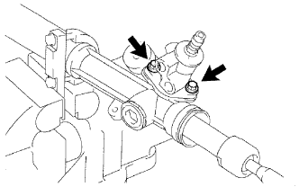
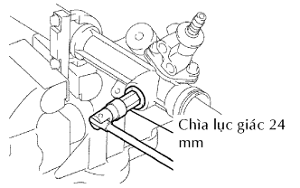
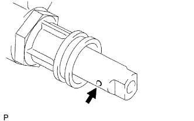

THANH NỐI DẪN ĐỘNG LÁI > LẮP RÁP |
| 1. LẮP PHỚT DẦU ỐNG THANH RĂNG |
Bôi dầu trợ lực lái lên gioăng chữ O mới và lắp nó vào thanh răng.
Giãn rộng một phớt dầu mới bằng các ngón tay.
Bôi dầu trợ lực lái lên vòng Teflon.
Lắp phớt dầu vào rãnh của thanh răng. Bóp vào phớt dầu để ép nó vào rãnh.
| 2. LẮP THANH RĂNG TRỢ LỰC LÁI |
Bôi mỡ vào 2 đầu thanh răng.
Lắp SST vào thanh răng.
Bôi dầu trợ lực lên SST.
Lắp thanh răng vào vỏ thanh răng.
Tháo SST.
Bôi dầu trợ lực lên SST.
Lắp SST vào phía đối diện của thanh răng.
Bôi dầu trợ lực lên lợi của phớt dầu mới. Dùng SST, lắp phớt dầu vào thanh răng.
Tháo SST.
| 3. LẮP BỘ HÃM ĐẦU XI LANH |
Bôi keo lên cái hãm.
Hãy dùng một khối gỗ và một búa, đóng lên cái hãm cho đến khi nó được lắp chặt hoàn toàn.
Dùng SST, lắp cái hãm.
| 4. THỬ KÍN KHÍ |
Lắp SST vào các cút nối của vỏ thanh răng.
Cấp chân không 53.33 kPa (400 mmHg, 15.75 in.Hg) trong thời gian xấp xỉ 30 giây.
Kiểm tra rằng không có sự thay đổi của áp suất chân không.
Nếu có sự thay đổi trong áp suất chân không, thì kiểm tra sự lắp ráp của các phớt dầu.
| 5. LẮP VAN ĐIỀU KHIỂN TRỢ LỰC LÁI |
Bôi mỡ gốc molybdenum disulfide vào trong vòng bi đũa kim bên trong vỏ thanh răng như trên hình vẽ.
|  |
Lắp van điều khiển bằng 2 bu lông.
| 6. LẮP DẪN HƯỚNG THANH RĂNG |
|  |
Lắp dẫn hướng thanh răng và lò xo.
Bôi keo làm kín lên 2 hoặc 3 ren của nắp lò xo dẫn hướng thanh răng.
Dùng đầu lục giác 24 mm, lắp tạm nắp lò xo.
| 7. ĐIỀU CHỈNH TỔNG TẢI TRỌNG BAN ĐẦU |
Để tránh cho răng của thanh răng khỏi bị hỏng lợi phớt dầu, lắp tạm các đầu thanh răng bên phải và bên trái.
Dùng đầu lục giác 24 mm, xiết chặt nắp lò xo dẫn hướng thanh răng.
Nới lỏng nắp 30°.
Dùng SST, vặn trục van điều khiển quay phải và trái 1 hay 2 lần. Đầu thanh răng dịch chuyển vào trong và ra ngoài.
Dùng đầu lục giác 24 mm, nới lỏng nắp cho đến khi lò xo dẫn hướng thanh răng hết sức căng.
Dùng SST, một cờlê cân lực và đầu lục giác 24 mm, xiết chặt nắp cho đến khi tải trọng ban đầu nằm trong tiêu chuẩn.
Bôi keo lên 2 hoặc 3 ren của đai ốc hãm.
Lắp tạm thời đai ốc hãm.
Dùng SST, kiểm tra lại tổng tải trọng ban đầu.
Tháo các đai ốc hãm bên trái và bên phải.
| 8. KIỂM TRA THANH RĂNG TRỢ LỰC LÁI |
|  |
Lồng một sợi dây 20 mm (0.79 in.) vào lỗ thông hơi của thanh răng và chắc chắn rằng lỗ thông hơi không bị tắc bởi mỡ.
| 9. LẮP ĐẦU THANH NỐI |
Lắp 2 vòng đệm có vấu vào thanh răng trong khi gióng thẳng nốt trên đầu thanh răng với vấu.
Lắp tạm 2 đầu thanh răng vào thanh răng.
Tra mỡ MP vào khớp cầu của các đầu thanh răng.
Dùng SST, lắp đầu thanh răng (bên phải) vào thanh răng.
Dùng SST và máy ép, lắp đầu thanh răng trợ lực lái (bên trái) vào thanh răng.
Dùng một thanh đồng và búa, hãm kẹp 2 vòng đệm có vấu (Phía bên trái và bên phải).
| 10. LẮP CAO SU CHẮN BỤI THANH RĂNG TRÁI |
Lắp cao su chắn bụi.
| 11. LẮP CAO SU CHẮN BỤI THANH RĂNG PHẢI |
| 12. LẮP KẸP CAO SU CHẮN BỤI THANH RĂNG TRÁI |
Dùng SST, xiết chặt kẹp cao su chắn bụi thanh răng, như được chỉ ra trên hình vẽ.
| 13. LẮP KẸP CAO SU CHẮN BỤI THANH RĂNG PHẢI |
| 14. LẮP KẸP CAO SU CHẮN BỤI THANH RĂNG TRÁI |
Dùng kìm, lắp kẹp.
| 15. LẮP KẸP CAO SU CHẮN BỤI THANH RĂNG PHẢI |
| 16. LẮP HỘP CƠ CẤU LỰC LÁI |
Dùng SST, kiểm tra rằng cao su chắn bụi thanh răng giãn ra êm khi trục van điều khiển quay.
Bôi mỡ MP vào như trên hình vẽ.
| 17. LẮP ỐNG CAO ÁP ĐIỀU KHIỂN LÁI |
Bôi dầu trợ lực lên 2 gioăng chữ O mới. Dùng SST, lắp 2 gioăng chữ O và ống cao áp quay trái.
Bôi dầu trợ lực lên gioăng chữ O mới. Dùng SST, lắp gioăng chữ O và một bên của ống cao áp quay phải.
Bôi dầu trợ lực lên gioăng chữ O mới. Lắp gioăng chữ O và ống cao áp quay phải.
| 18. LẮP ĐẦU THANH NỐI BÊN TRÁI |
Vặn đai ốc hãm và đầu thanh nối vào đầu thanh răng cho đến khi các dấu gióng thẳng với nhau.
Sau khi điều chỉnh độ chụm, hãy xiết đai ốc hãm.
| 19. LẮP ĐẦU THANH NỐI BÊN PHẢI |